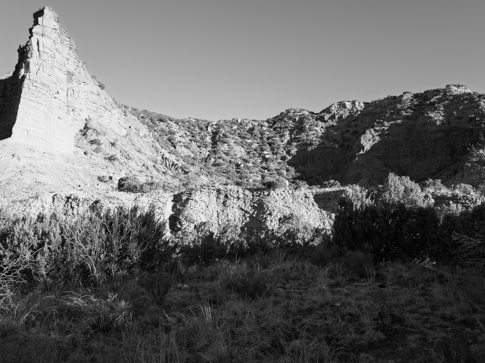
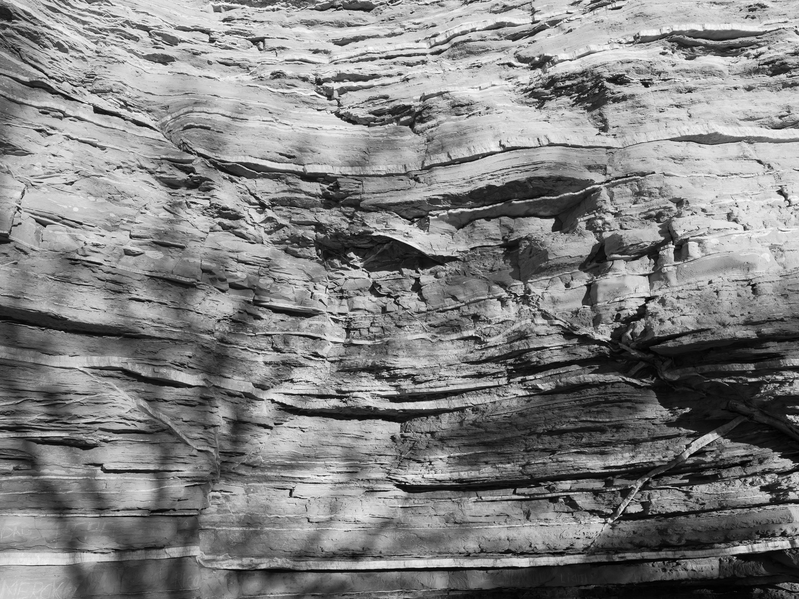
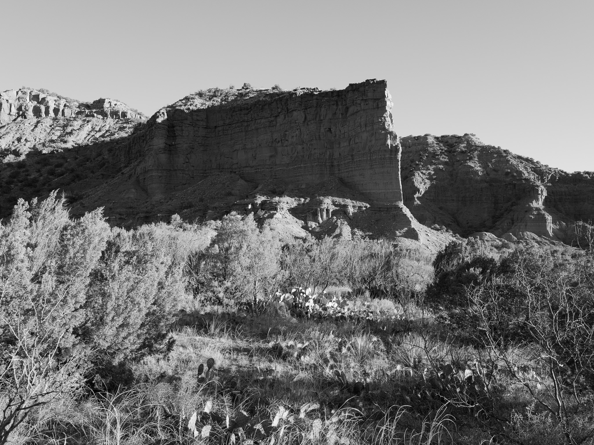
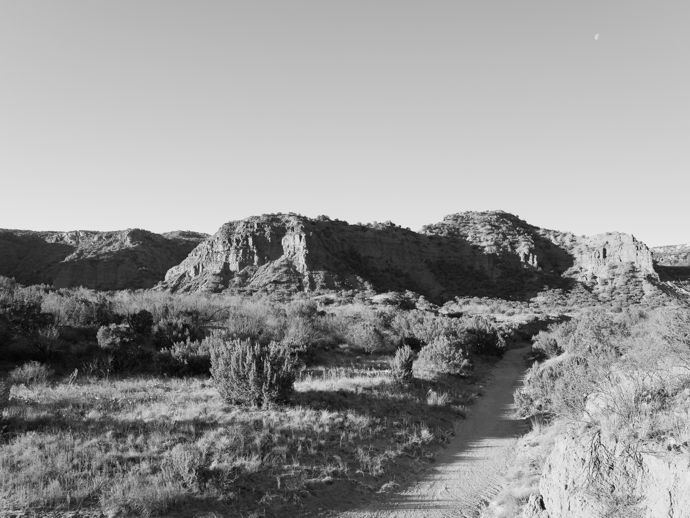
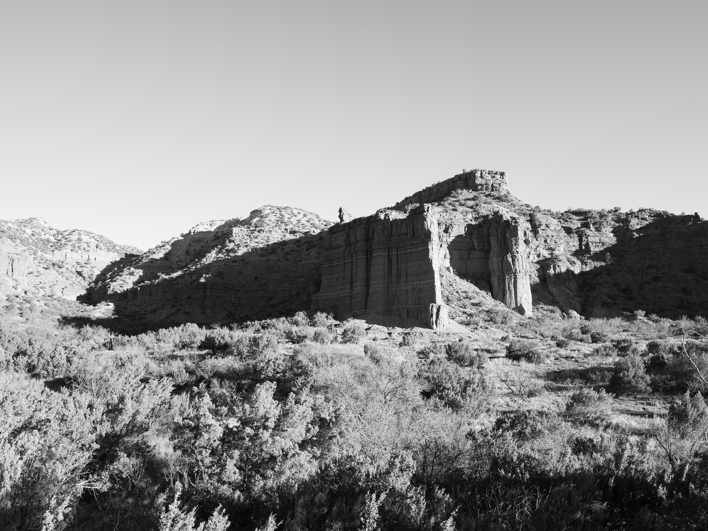
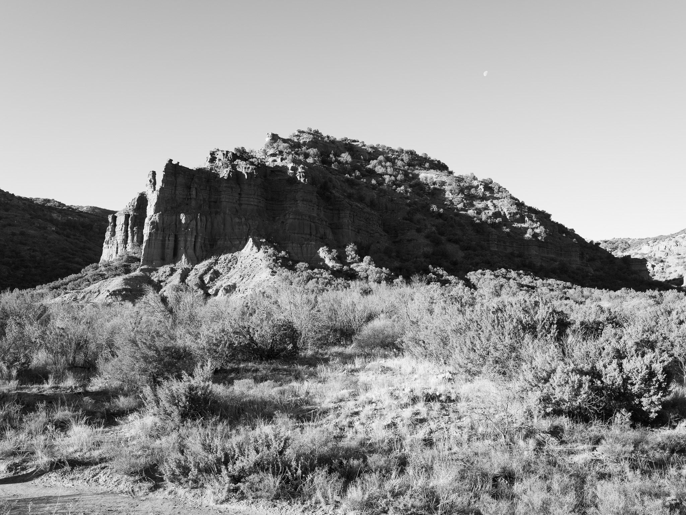
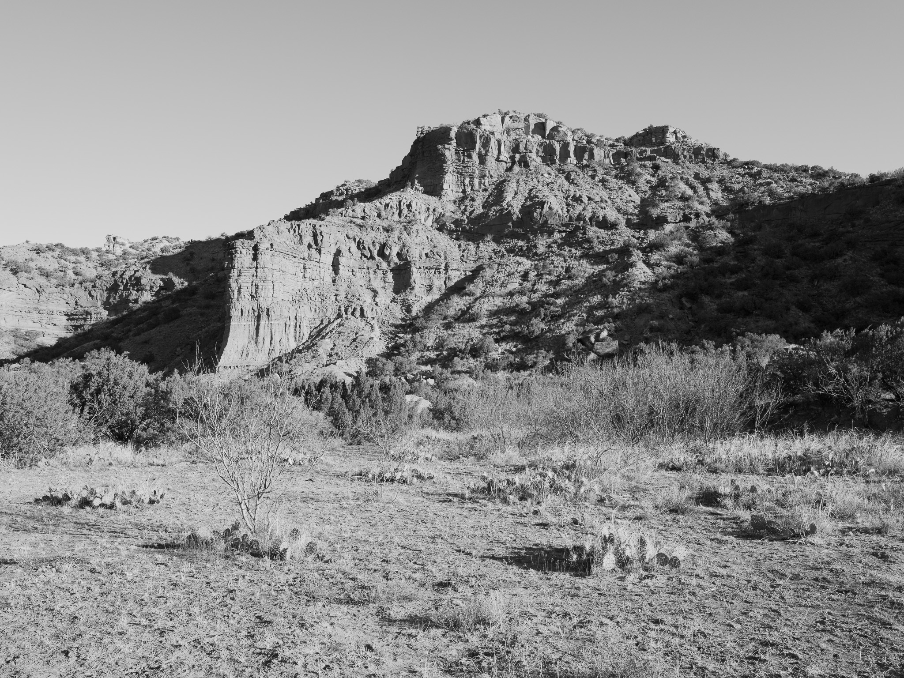

Public Lands Institute
Index
Archive
Caprock Canyon State Park
TX
Caprock Canyon State Park I · 2026-01-08
_DSF0725.jpg
Caprock Canyon State Park II · 2026-01-08
_DSF0729.jpg

Caprock Canyon State Park III · 2026-01-08
_DSF0731.jpg

Caprock Canyon State Park IV · 2026-01-08
_DSF0733.jpg

Caprock Canyon State Park V · 2026-01-08
_DSF0739.jpg
Caprock Canyon State Park VI · 2026-01-08
_DSF0744.jpg

Caprock Canyon State Park VII · 2026-01-08
_DSF0746.jpg

Caprock Canyon State Park VIII · 2026-01-08
_DSF0751.jpg

Caprock Canyon State Park IX · 2026-01-08
_DSF0753.jpg

Caprock Canyon State Park X · 2026-01-08
_DSF0757.jpg
Caprock Canyon State Park XI · 2026-01-08
_DSF0758.jpg
View all 11 images
← Sea Rim State Park
Palo Duro Canyon State Park →
 Caprock Canyon State Park I · 2026-01-08
_DSF0725.jpg
Caprock Canyon State Park I · 2026-01-08
_DSF0725.jpg